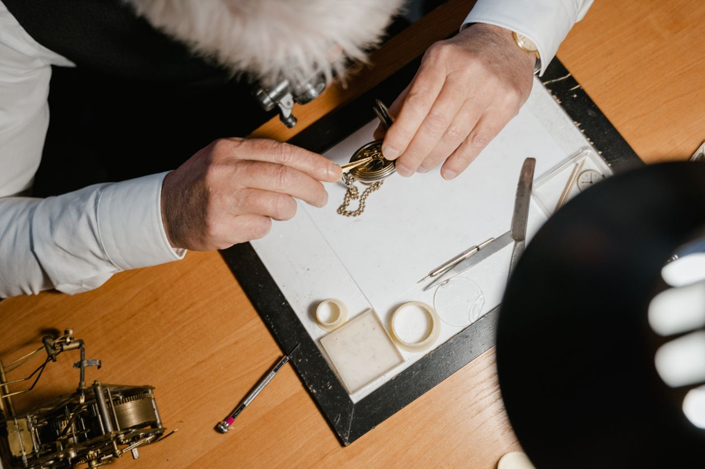

The inventor
Barnaby Fettle, by way of the fairground
Apprenticed to a clockmaker at sixteen. Sacked politely at nineteen for building a cuckoo clock that laid an egg. Ten years repairing fairground machines up and down the country taught me the only lesson that matters in this trade: a machine that performs for crowds must be honest, guarded, and fixable with the tools in the van.
Fettle & Brass opened in Birmingham in 2016. Fourteen machines since. Two kept home when they should have been — that count is on the home page, where it stays. The workshop builds slowly, demonstrates constantly, and prints everything: run-times, gear counts, fees, failures.

Credentials, such as they are
City & Guilds clockmaking apprenticeship, completed 1998. Fairground inspection assistant, ten seasons. Boiler operation certificate for the Firedrake, renewed annually — the certificate is framed; the inspection reports are not, they're in a folder anyone hiring the dragon may read.
The working page · how a machine runs
Five stages, no mystery
1
Sketch
Every machine starts as a pencil drawing with the audience drawn in — where they stand decides the guarding before the gear train is even sized. If a sketch can't show its own barrier line, it doesn't reach the bench.
2
Gear train
The movement is designed backwards from the run-time the show needs. Springs and weights are chosen from the printed table, not from optimism. Decorative gears are added last and confessed on the plate.
3
Spring / steam truth
The power source is written on the machine's plate in plain words — mainspring, weights, or live steam with its pressure and certificate. Nothing on a Fettle plate is “steam-style”. It is steam, or it says what it is.
4
Guarding
Distances from Table G1, paced out on the ground at every venue, by our crew, before doors. Steam machines add a boiler hand, a venting check and a weather call — wind moves steam, and the dragon does not fly in a gale.
5
Demonstration
Our operators run the machine, wind it in the open where the crowd can see the work, and stop the show the moment anything sounds wrong. A stopped show is a story. A forced show is an incident report.
The honesty page · the whole fleet, one table
Power truth, all of it
Every machine we will hire you, with what actually drives it and how many of its gears are jewellery. If a machine is not in this table, we do not hire it out.
| Machine | Class | What actually drives it | Run per wind | Gears: working / decorative | Status |
|---|---|---|---|---|---|
| The Pearl Oyster | A | Mainspring, key-wound | 5 min | 31 / 3 | Available |
| The Brass Band in a Box | B | Falling weights; pinned-barrel organ | 40 min | 58 / 6 | Booked Aug 2027 |
| Madame Cog | C | Twin mainsprings | 20 min | 214 / 37 | On loan to Mar 2027 |
| The Firedrake | D | Live steam, boiler 3 bar, certified | 80 min | 96 / 0 | Available, exteriors |
| The Somersaulting Sailor | C | Twin mainsprings | 20 min | 143 / 15 | Withdrawn — failed inspection |
The decorative-gear confession
Sixty-one gears across the fleet turn nothing, drive nothing, and are proud of it. They are there because a machine the public can read is a machine the public trusts — you can follow a gear train with your eyes, including the three that are lying to you. The lying ones are labelled on each machine's plate. A workshop that hides its decorative gears will hide other things. That is the whole confession, and it is also the sales pitch.
What we will not build
A machine that pretends to a power it doesn't have. A “steam” piece with a battery in it. A barrier closer than the table allows because the photograph looks better. A show that runs past a machine's day cap because the crowd is enjoying itself. The crowd enjoys a working machine; the cap is part of why it works.
Engagement terms · the short version, in the open
How hiring works
Demonstration safety
Every public run follows the printed tables: guarding distances from Table G1, day caps from Table R1, pre-show inspection signed by the operator of the day. Any member of our crew can stop any show, for any reason that sounds wrong, without asking Birmingham.
Hire terms
Machines travel with their operators — never handed over, never dry-hired. Deposit 30% to book; balance on the day, after the show. If a machine fails its pre-show inspection, a substitute of equal class goes in the van at the same fee, or the deposit comes back in full. Hirer's choice.
Steam & weather
The Firedrake performs outdoors or in halls vented for steam. Steam-up takes 45 minutes before doors and is part of the show if the hirer wants it. High wind or a failed boiler check cancels the steam — the crew demonstrates the machine cold, tells the crowd exactly why, and the fee drops to the Class C rate for the day.
Commissions
One commission on the bench at a time. Drawing agreed and signed before metal is cut; bench weeks and materials priced from Table F1; the client receives the machine's plate — power truth and decorative-gear count included — with the machine.